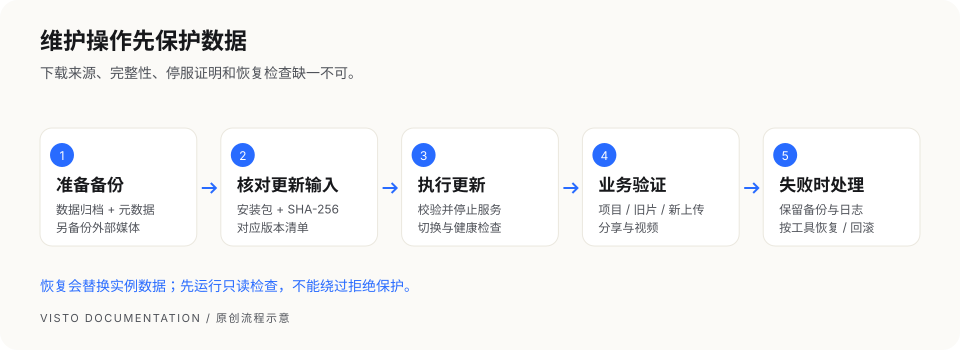

VISTO USER GUIDE / 24
更新、恢复、回滚与卸载
本章适用于 macOS 原生 Server。执行的是主机维护操作，普通项目成员无需运行。占位符必须替换成实际路径、版本和摘要；保留所有命令输出用于定位失败。


更新：安装包、摘要和版本清单要匹配
免费 Server 提示新版本后，由维护者从官方 Release 手动下载。免费版本提示清单不签名，不自动下载或安装；SHA-256 校验是完整性检查，不能替代下载来源的可信度。
当前原生更新脚本还要求版本清单文件。不能只提供包与摘要；未传 --manifest 时脚本会查找 <安装包路径>.manifest.json。按同一 Release 的说明取得版本清单，确认其 version 与包一致。若 Release 未提供可用清单或安装路径，停止并联系维护者，不随意拼写清单绕过缺失。
- 记录当前版本与运行状态。
- 创建备份，把归档、元数据和外部媒体副本妥善保存。
- 下载同一发布的包、摘要与版本清单。
- 校验 SHA-256，执行：
sudo /Library/Visto/current/scripts/update-visto-server.sh \
--package '/实际路径/Visto-Server_<版本>_macos-arm64.tar.gz' \
--sha256 '<官方公布的64位SHA-256>' \
--manifest '/实际路径/该版本的清单.json'
脚本在校验、停服和备份保护后切换程序，检查健康状态；失败时按工具的恢复流程处理。不要手工改 current 链接。
更新后检查
curl -fsS http://127.0.0.1:8787/health/ready
sudo /Library/Visto/current/bin/visto-server --json \
--address 127.0.0.1:8787 status
再用浏览器确认项目、旧文件、新上传、视频播放和分享。健康接口通过不能代替业务数据检查。
日常服务启停与日志
维护前确认没有在途上传或重要审阅。默认 macOS 实例可以用系统服务管理器停止或启动：
# 停止
sudo launchctl bootout system/com.visto.server
# 启动
sudo launchctl bootstrap system /Library/LaunchDaemons/com.visto.server.plist
# 已加载服务的重启
sudo launchctl kickstart -k system/com.visto.server
启动或重启后再次查 health/ready 并在网页验证。若提示服务不存在或已加载，先确认当前服务状态和实际安装配置，不反复执行。默认日志位于 /Library/Logs/Visto；保留相关时间段的错误即可，发给他人前脱敏。网页全局设置通常保存后立即生效，主机环境配置的修改则按要求重启。
恢复：先只读检查，再执行替换
恢复会替换当前实例的数据目录，会影响备份之后的业务变化。先保存当前实例的备份；确认目标主机、数据目录、归档和同名元数据。
sudo /Library/Visto/current/scripts/restore-visto-server.sh \
--backup-file '/实际路径/备份.tar.gz' \
--check-only
只读检查通过且你已确认覆盖影响后执行：
sudo /Library/Visto/current/scripts/restore-visto-server.sh \
--backup-file '/实际路径/备份.tar.gz' \
--confirm-restore
两种模式不能同时使用。当前恢复保护要求原数据目录一致；跨目录恢复可能被拒绝。拒绝时保留错误，不手工解压覆盖数据库，也不修改元数据去伪装路径。
恢复后确认服务就绪、项目和版本符合备份时间，原文件可读，外部存储仍可访问；数据目录外原片需要独立恢复与核对。
回滚到保留的程序版本
sudo /Library/Visto/current/scripts/rollback-visto-server.sh \
--to-version '<已保留的版本>' \
--confirm-rollback
程序回滚与数据恢复目的不同；不能假定旧程序一定兼容当前数据库。让工具执行对应保护，按具体失败说明处理。不要删除恢复点、备份或失败日志。
卸载
默认卸载保留用户数据和备份：
sudo /Library/Visto/current/scripts/uninstall-visto-server.sh --yes
如果提示 could not be stopped，卸载会中止并保留服务配置、程序和数据。先检查服务或进程，解决原因后再试，不手工删除服务配置。
卸载程序不会自动抹掉外接盘或远程存储上的文件。--purge-data 会扩大删除影响，只在确认不需要数据并有可用备份时按该版本说明使用。